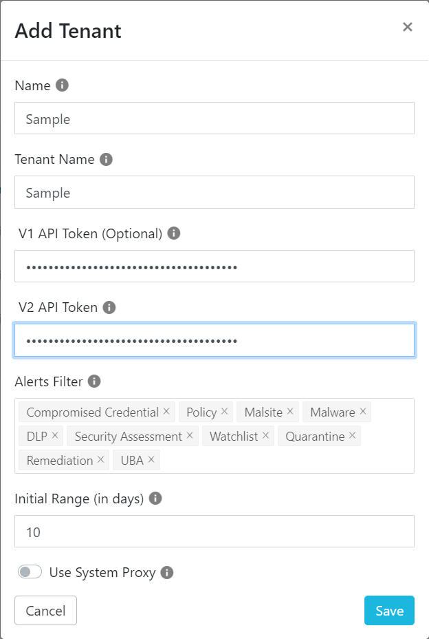
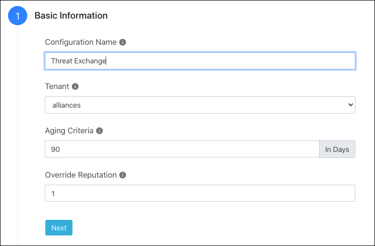
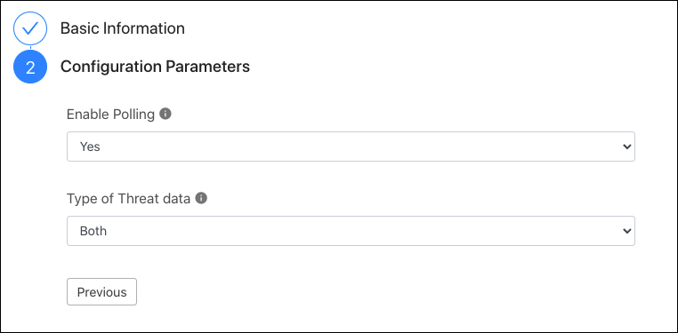

Configure the Netskope Plugin for Threat Exchange
You will need your Netskope tenant name and API token (V1, and optionally V2) to complete this configuration.
Log in to your Cloud Exchange tenant.
Go to Settings and click Netskope Tenants.
Click Add Tenant.
 Enter a Threat Exchange name for your Netskope tenant.
Enter your Netskope tenant name. Do not enter the
<tenant_name>.goskope.com, URL. Enter just your tenant. For example, if it'smycompany.goskope.com, just entermycompany. If your tenant haseuin the URL, entertenant_name.eu.Enter your Netskope tenant API token(s) obtained previously.
Set the range for ingesting data from Netskope. In this case, set the Initial Range to 7 days to pre-populate Threat Exchange.
If you use a proxy, enable the proxy toggle.
Click Save. Your tenant appears on the page.
Now configure the Netskope plugin for Threat Exchange. Go to Settings > Plugins.
Select the Netskope CTE box to open the plugin creation pages. Field descriptions are provided here.
Enter and select the Basic Information on the first page:
 Configuration Name: Enter a name appropriate for your integration.
Tenant: Choose the Tenant you added previously.
Aging Criteria: Adjust to your business needs. The default is 90 days for an indicator to be marked as inactive.
Override Reputation: Enter a value between 1-10. Reputation is a meta field that can be used for advanced sorting only.
Click Next.
Enter and select the Configuration Parameters on the second page:
 Enable Polling: Leave the default of yes.
Type of Threat Data: Select the type of threat data you want to collect.
Click Save in the top right. Go to Threat Exchange > Plugins to see your new Netskope plugin.
Threat Exchange Field Descriptions
Field | Description | Default Value |
|---|---|---|
Configuration Name | Name of the Threat Exchange plugin. | - |
Tenant Name | Netskope Tenant name. For | - |
Aging Criteria | How long before the indicator is marked “inactive” and will no longer be sharable. | - |
Override Reputation | All reputation indicators are honored when provided by plugged in alliance partners. If they are not provided, their reputation is set to 5. The native or assigned value can be overridden when setting this value. | 5 |
Enable Polling | Enable/Disable polling data from Netskope. | Yes |
Type of the Threat data to pull | Type of Threat data to pull. Allowed values are | Both |